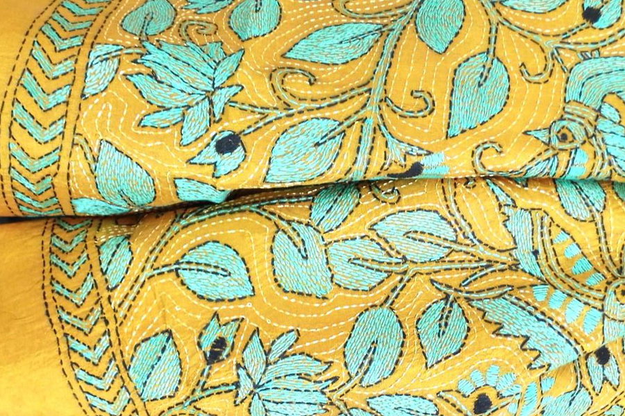

From the land of Tehzeeb and Nazaquat, Lucknow, Chikankari is a delicate and intricate embroidery style that is believed to have been introduced by Nur Jehan, the wife of Mughal emperor Jahangir. While the art flourished under the patronage of the Mughals, references to the art have been found as early as the 3rd century BC with Megasthenes mentioning the use of flowered muslins by Indians. A chikan piece is created by block printing patterns on it. Craftsmen then embroider stitches along the pattern, and the finished piece is later washed to remove traces of the prints. Traditionally, Chikankari began as a type of white-on-white embroidery, but today the craft uses a variety of fabrics and colours. From white thread embroidered on soothing pastels to coloured silk threads, Chikankari has evolved into an art for those with a taste for the finer things.
Amidst a sea of sand and never-ending arid land, the Rajasthani people, with their bright colourful clothes stand out like a green oasis . Besides a host of sophisticated arts and crafts this state is famous for, the rustic charm of Rajasthani patchwork never fails to impress. It’s a basic craft that stitches together small pieces of cloth in a decorative pattern to form the topmost layer of the piece with layers of cloth padding underneath. And voila! You have a treat for the eyes.
One of the traditional embroidery styles practised in Bengal and Odisha, Kantha work is known for its simplicity. Traditionally practised by rural women, Kantha was done on soft dhotis and sarees, with a simple running stitch along the edges. Interestingly, the thread used to do that was drawn from the border threads of the used cloth. Characterised by motifs of birds, animals, flowers and everyday activities in a running stitch format with short gaps, the Kantha embroidery today adorns sarees, dress materials, bed covers, wall hangings, upholstery and a lot more
If not as famous as sarson da saag and makke di roti, Punjab’s Phulkari is definitely the second most famous thing that comes to the mind when you think of this state. As the name suggests, Phulkari is the embroidery of flower motifs on fabric. Traditionally practised by women of the house as a pastime, this embroidery is quite a unique one. The stitches are embroidered on the reverse of the cloth so that the design takes shape in the front. The fabric d is usually a hand-spun or natural-dyed khadi cloth. The contrast of bright colours on a lighter coloured fabric is what makes this embroidery stand out.
Kashidakari, more popularly known as Kashmiri embroidery, evolved under the patronage of Persian and Mughal rulers. While not much is known about the origins of this craft, legend has it that a Persian sufi saint brought the skill to Kashmir. What started as a skilled craft, soon became a source of domestic employment as farming in the harsh winters was not possible. Inspired by the scenic locales of Kashmir, Kashidakari draws heavily from the flora of the state. However, human and animal figures are not a part of this style of embroidery. A unique feature of Kashidakari is the Kashmiri tea pot. Known for its simple chain stitches, this embroidery done mostly on silk and wool is a global rage.